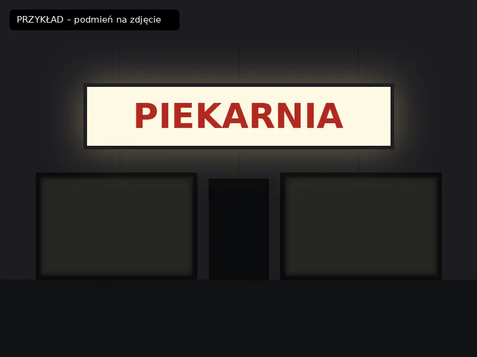

Szyldy reklamowe Gdynia
Szyldy reklamowe w Gdyni projektujemy i wykonujemy dla sklepów, lokali usługowych, gabinetów, restauracji i biur, które chcą być lepiej widoczne z ulicy. Robimy szyldy na elewację, nad wejście, semafory oraz oznakowanie wewnątrz lokalu, z podświetleniem LED lub bez. Wycenę przygotowujemy na podstawie wymiarów, materiału i miejsca montażu.
Jakie szyldy reklamowe wykonujemy w Gdyni
Każdy szyld dobieramy do budynku, branży i tego, skąd klienci mają go zobaczyć: z chodnika, z jadącego samochodu czy z drugiej strony ulicy. Najczęściej wykonujemy:
- Szyldy płaskie na elewację – panel z dibondu, PCV lub plexi z nadrukiem albo oklejeniem folią, montowany nad wejściem lub na fasadzie.
- Kasetony reklamowe – skrzynki świetlne z podświetleniem od środka, dobrze widoczne także wieczorem.
- Semafory (szyldy dwustronne) – montowane prostopadle do ściany, widoczne dla osób idących wzdłuż ulicy.
- Litery przestrzenne – pojedyncze litery i logo 3D, podświetlane lub nie; szczegóły opisujemy na stronie o literach przestrzennych.
- Tablice i szyldy informacyjne – przy wejściu do biura, gabinetu czy kancelarii, często z plexi na dystansach.
- Oznakowanie wewnątrz lokalu – logo na ścianie za ladą, napisy na szybach, tabliczki.
Jeśli nie wiesz, który rodzaj będzie najlepszy, wystarczy zdjęcie elewacji i przybliżone wymiary – zaproponujemy rozwiązanie i pokażemy wizualizację.
Materiały i wykończenia szyldów
Od materiału zależy wygląd, trwałość i cena szyldu. Na zewnątrz stosujemy materiały odporne na wilgoć, słońce i nadmorski wiatr, który w Gdyni potrafi dać się we znaki.
- Dibond (kompozyt aluminiowy) – sztywny, lekki, odporny na warunki atmosferyczne; dobry wybór na szyldy płaskie.
- Plexi (pleksa) – mleczna, przezroczysta lub kolorowa; sprawdza się w szyldach podświetlanych i eleganckich tablicach.
- PCV spienione – ekonomiczne rozwiązanie, szczególnie do wnętrz i szyldów tymczasowych.
- Stal nierdzewna i aluminium – do liter i elementów o bardziej prestiżowym wyglądzie.
- Folie i nadruki – folie wylewane i nadruk UV, które dłużej zachowują kolor.
Wykończenie dobieramy do identyfikacji wizualnej firmy: kolory z księgi znaku, mat lub połysk, frezowane logo, elementy wypukłe. [UZUPEŁNIJ: czy macie własny park maszynowy – ploter, frezarka CNC, drukarka UV]
Szyld z podświetleniem czy bez – jak wybrać
Szyld podświetlany warto wybrać, jeśli lokal działa po zmroku, stoi przy ruchliwej ulicy albo konkuruje z innymi reklamami w okolicy. Stosujemy energooszczędne moduły LED, które zużywają niewiele prądu i świecą równomiernie. Więcej o tym rozwiązaniu piszemy w zakładce o reklamie LED.
Szyld bez podświetlenia wystarczy, gdy firma działa głównie w dzień, budynek jest dobrze oświetlony lub zależy Ci na niższym koszcie. Możliwe jest też rozwiązanie pośrednie – oświetlenie szyldu z zewnątrz reflektorami.
Przy wyborze pomogą trzy pytania: w jakich godzinach przychodzą klienci, z jakiej odległości szyld ma być czytelny i czy w miejscu montażu jest dostęp do zasilania.
Realizacje szyldów reklamowych w Gdyni
Wykonaliśmy szyldy dla [UZUPEŁNIJ: branże klientów, np. gastronomia, usługi, handel] w Gdyni [UZUPEŁNIJ: dzielnice lub miejscowości, np. Śródmieście, Orłowo, Rumia]. Zdjęcia przed i po montażu znajdziesz w zakładce Realizacje.


Jak wygląda współpraca:
- Kontakt i przesłanie zdjęć elewacji lub wnętrza z wymiarami.
- Projekt i wizualizacja szyldu na zdjęciu Twojego budynku.
- Wycena i akceptacja projektu.
- Produkcja szyldu – [UZUPEŁNIJ: orientacyjny czas realizacji].
- Montaż na miejscu – [UZUPEŁNIJ: czy montaż wykonuje własna ekipa, czy dysponujecie podnośnikiem].
Obszar działania: Gdynia oraz [UZUPEŁNIJ: czy także Sopot, Gdańsk, Rumia, Reda, Wejherowo].
Od czego zależy cena szyldu
Cena szyldu reklamowego zależy od kilku czynników, dlatego każdą realizację wyceniamy indywidualnie:
- wymiary szyldu i liczba elementów,
- materiał – PCV, dibond, plexi, stal,
- podświetlenie LED i doprowadzenie zasilania,
- stopień skomplikowania – frezowanie, litery 3D, nietypowe kształty,
- projekt graficzny – czy masz gotowe logo, czy trzeba je przygotować,
- montaż – wysokość, rodzaj ściany, potrzeba podnośnika lub rusztowania.
Orientacyjne ceny znajdziesz w cenniku: [UZUPEŁNIJ: przykładowe widełki cenowe lub ceny „od”]. Dokładną wycenę przygotujemy po otrzymaniu zdjęcia i wymiarów.
Formalności przed montażem szyldu reklamowego w Gdyni
Zanim szyld zawiśnie na budynku, warto sprawdzić kilka spraw. To ogólne wskazówki, nie porada prawna – szczegóły najlepiej potwierdzić w urzędzie lub u zarządcy budynku.
- Zgoda właściciela lub wspólnoty – przy montażu na elewacji zwykle potrzebna jest zgoda zarządcy nieruchomości.
- Uchwała krajobrazowa – warto sprawdzić, czy w gminie obowiązują przepisy określające wielkość, wygląd i miejsce szyldów.
- Ochrona konserwatorska – w zabytkowych częściach miasta, np. w modernistycznym śródmieściu Gdyni, mogą obowiązywać dodatkowe wymagania.
- Zgłoszenia i opłaty – w zależności od wielkości i sposobu montażu może być potrzebne zgłoszenie lub opłata.
[UZUPEŁNIJ: czy pomagacie w przygotowaniu dokumentacji, np. wizualizacji do zgłoszenia]
Pytania i odpowiedzi
Ile kosztuje szyld reklamowy w Gdyni?
Cena zależy od wymiarów, materiału, podświetlenia i sposobu montażu. Prosty szyld płaski kosztuje zwykle znacznie mniej niż kaseton czy litery przestrzenne z LED. Orientacyjnie: [UZUPEŁNIJ: ceny od]. Dokładną wycenę przygotujemy po otrzymaniu zdjęcia elewacji i wymiarów.
Jak długo trwa wykonanie szyldu?
Czas realizacji zależy od rodzaju szyldu i akceptacji projektu. Standardowo jest to [UZUPEŁNIJ: liczba dni roboczych] od zatwierdzenia wizualizacji. Przy pilnych zleceniach zapytaj o możliwość szybszego terminu.
Czy zajmujecie się także montażem szyldu?
[UZUPEŁNIJ: czy montaż jest w ofercie i na jakim obszarze]. Przed montażem oceniamy rodzaj ściany, wysokość i dostęp do zasilania, żeby dobrać właściwe mocowanie.
Jaka jest gwarancja na szyldy reklamowe?
Na wykonane szyldy udzielamy gwarancji [UZUPEŁNIJ: okres i zakres gwarancji, osobno dla konstrukcji i modułów LED]. Szczegóły zapisujemy w ofercie.
Z jakiego materiału najlepiej zrobić szyld na zewnątrz?
Na zewnątrz najczęściej polecamy dibond lub plexi, bo dobrze znoszą deszcz, słońce i wiatr. Do szyldów podświetlanych świetnie sprawdza się mleczna plexi z modułami LED. PCV lepiej zostawić do wnętrz lub reklam krótkoterminowych.
Czy możecie zaprojektować szyld, jeśli nie mam logo?
[UZUPEŁNIJ: czy oferujecie projekt logo]. Jeśli masz gotowe logo, prześlij je najlepiej w formie wektorowej (PDF, AI, SVG) – przygotujemy na jego podstawie wizualizację szyldu na Twoim budynku.
Zapytaj o wycenę
Wyślij nam zdjęcie elewacji i przybliżone wymiary – przygotujemy wizualizację i wycenę szyldu reklamowego dla Twojej firmy w Gdyni.